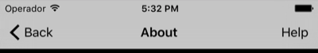
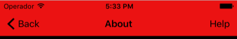
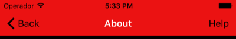
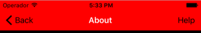

Navigation Bar
Korey Hinton onCustomizing a navigation bar is tricky. For this reason I usually don't use navigation controller, since frankly the navigation push animation is overused in a lot of apps and the navigation bar isn't very customizable. This post will show you how you can customize it if you need to.
Tint Color
The UIAppearance api allows you to easily change the tint color of something for your entire app. I think Apple is assuming that you either want 1 navigation controller in your app that looks consistenly the same at every stacked screen or that if you do have multiple navigation controllers in your app they'd look the same. For that reason the easiest way to set the tint color is in application:didFinishLaunching:
func application(application: UIApplication,
didFinishLaunchingWithOptions launchOptions: [NSObject: AnyObject]?) -> Bool {
UINavigationBar.appearance().tintColor = UIColor.blackColor()
return true
}

Bar Tint
Changing the background color of the navigation bar's tint can similarly be done using the UIAppearance api:
UINavigationBar.appearance().barTintColor = UIColor.redColor()
Title Text Attributes
You can use the title text attributes dictionary to pass in a variety of attributes, use the NSForegroundColorAttributeName key to set the title text color:
UINavigationBar.appearance().titleTextAttributes = [NSForegroundColorAttributeName:UIColor.whiteColor()]
Translucent
If the translucent nature of the navigation bar bothers you (allowing background colors underneath bleed through), then set the translucent property to false. You can kind of see that this version is lighter since darker black background underneath is no longer affecting the color. Doing all of these changes in the app delegate is recommended:
func application(application: UIApplication, didFinishLaunchingWithOptions launchOptions: [NSObject: AnyObject]?) -> Bool {
UINavigationBar.appearance().tintColor = UIColor.blackColor()
UINavigationBar.appearance().barTintColor = UIColor.redColor()
UINavigationBar.appearance().titleTextAttributes = [NSForegroundColorAttributeName:UIColor.whiteColor()]
UINavigationBar.appearance().translucent = false
return true
}
